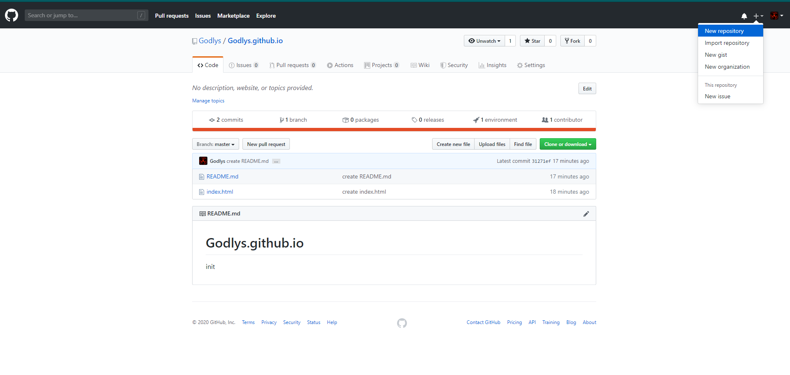
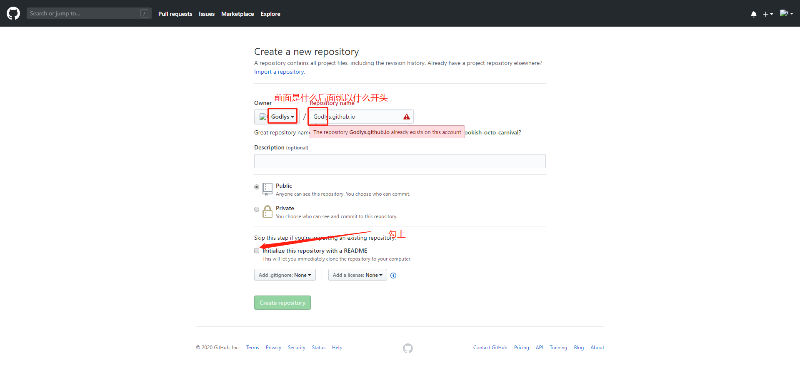
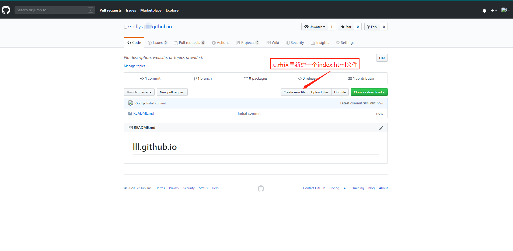
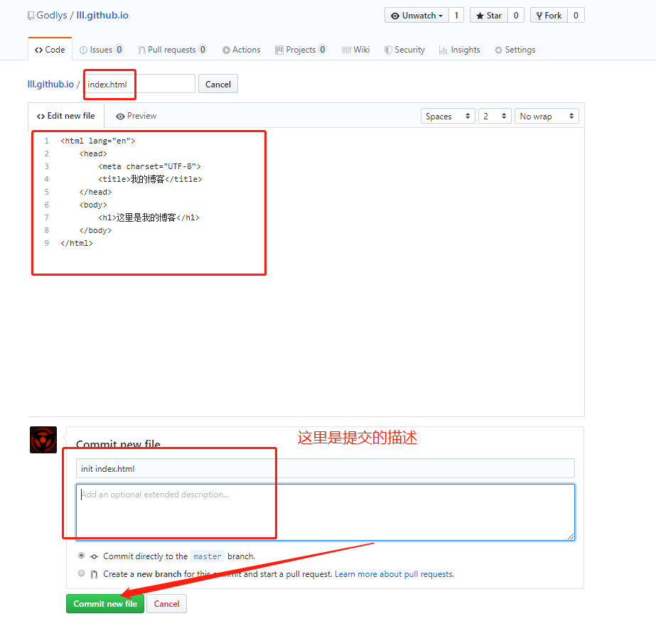

三分钟创建一个自己的博客
第一步:创建一个GitHub代码仓库
1-创建一个代码仓库

重点:创建github名.github.io项目,我这里报红是因为我已经注册过了

2-给新建的代码仓库上传/新建一个index.html的文件

2-OK为了给大家准备了html文件-复制下面代码进去新建的index.html即可
<html lang="en">
<head>
<meta charset="UTF-8">
<title>我的博客</title>
</head>
<body>
<h1>这里是我的博客</h1>
</body>
</html>

3-浏览器访问 你的github名字.github.io
例如我的:https://godlys.github.io/